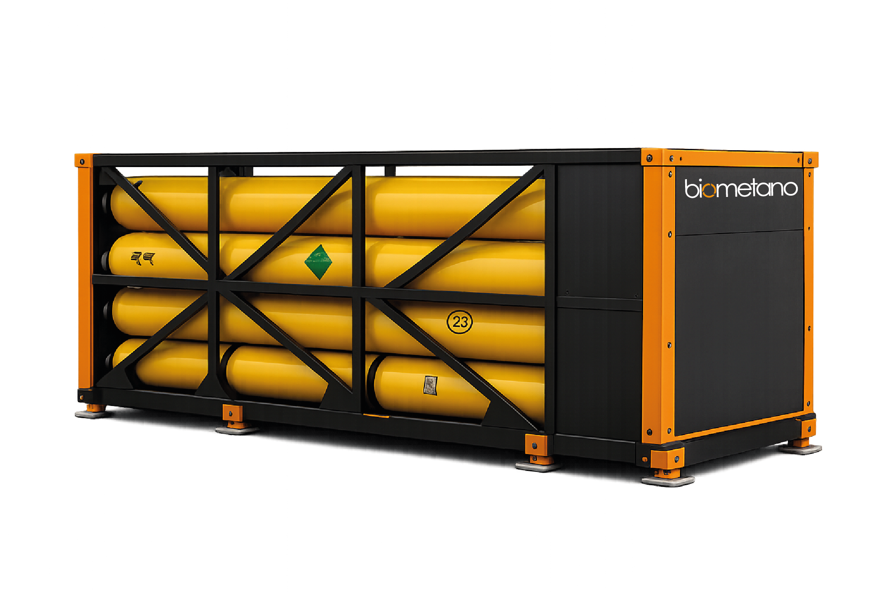

Cuando el consumidor no tiene red de gas natural, el biometano viaja comprimido en módulos sobre carretera. La planta produce, el módulo transporta, el cliente descomprime y consume — sin tubería física entre uno y otro.

Biometano CH₄ ≥ 97 % salida de la planta de upgrading.
Compresor de alta presión llena módulos de cilindros para transporte por carretera.
Camión / tractocamión con módulo certificado entrega al sitio del cliente.
Estación regulada en sitio; el gas entra al consumidor a la presión que requiere.
Diseñamos el sistema completo: estación de carga, transporte y descompresión.